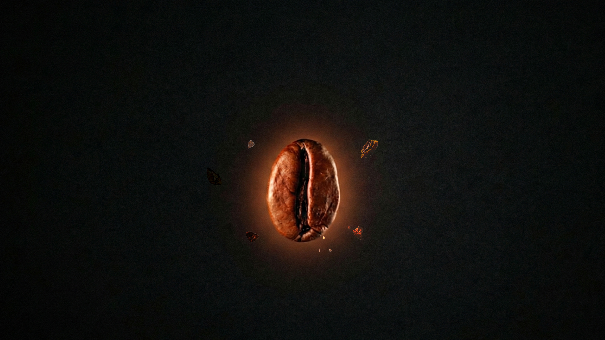
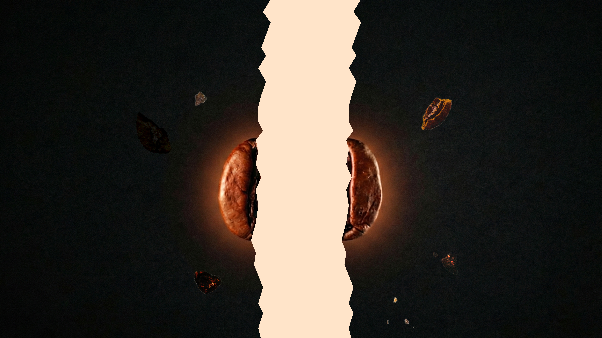
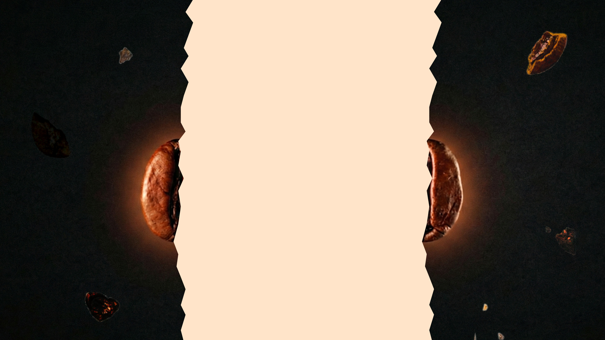
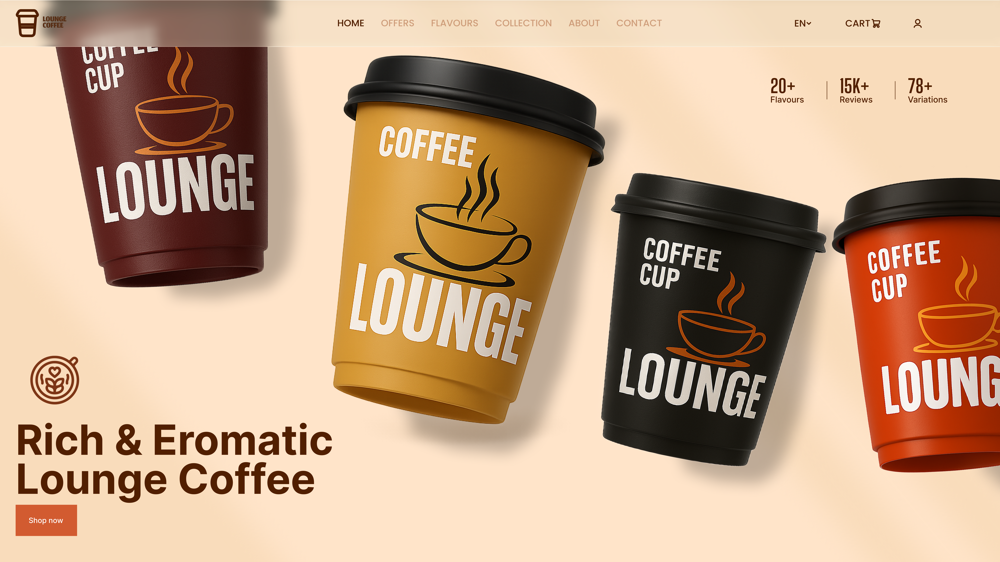
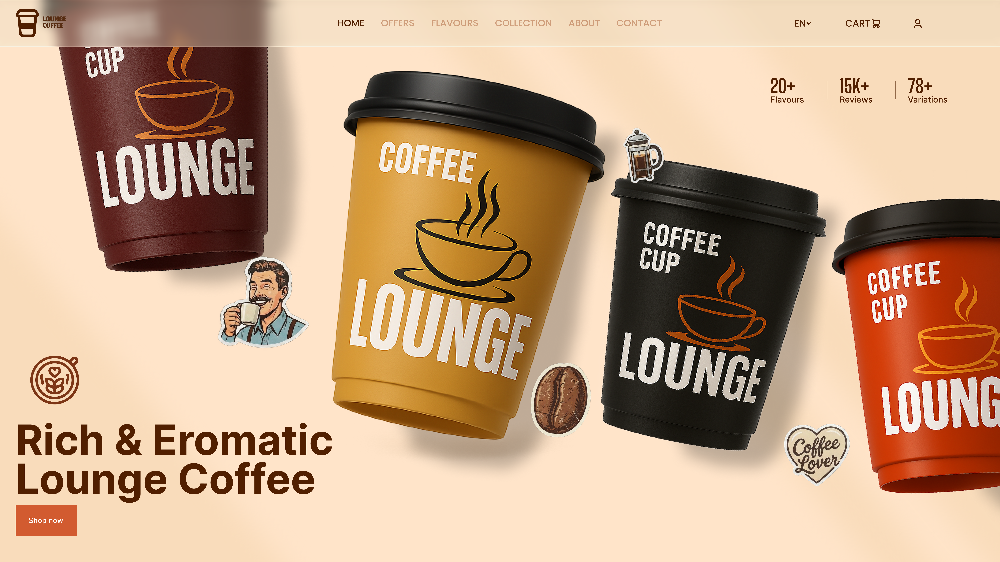
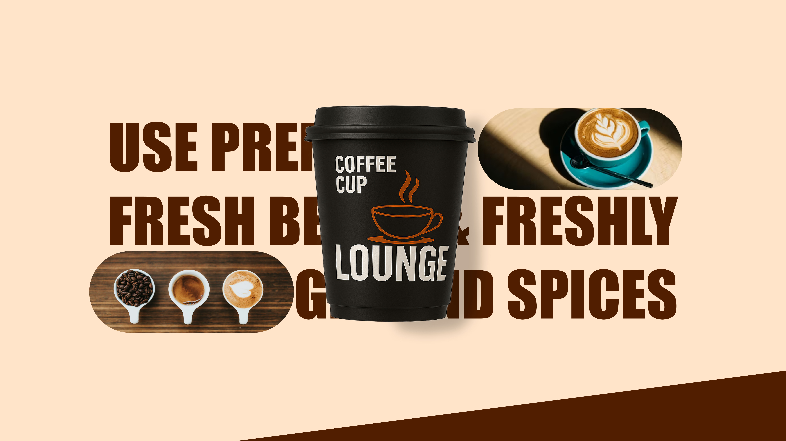

Lounge Coffee
Crafting a luxury brand identity and premium web experience for a high-end specialty coffee shop — blending minimalist aesthetics with intuitive e-commerce menu interactions.

Overview
Purpose — Lounge Coffee is an upscale artisanal café dedicated to delivering sensory excellence. The digital objective was to create a cohesive web application that represents their high-end physical space and enables customers to customize and order specialty beverages with ease.
The Problem — Traditional food-ordering apps rely on crowded grids and generic cards, eroding the premium perception of boutique brands. Customers ordering artisanal products expect a tailored, beautiful digital atmosphere that matches the physical craft of coffee preparation.
Solution — A clean, typographically-driven interface using high-contrast layouts, smooth interactive states, and curated visuals. The menu system emphasizes the craftsmanship of the barista through large product photography, ingredient detail reveals, and an elegant, minimalist cart checkout flow.
"Our digital goal was to translate the aroma and luxury feel of our physical lounge into a pixel-perfect online ordering experience that feels just as crafted as our pour-overs."
Design System


Final Screens






Takeaways
Translating a luxury brand personality to the web requires rigorous attention to spacing, typeface size contrasts, and transition states. Using a coffee-warm color palette combined with heavy, bold headings matches the physical coffee shop aesthetics perfectly. Minimizing grid details and prioritizing photography allowed the products themselves to carry the visual load, creating a sensory-rich digital menu.
Reflection
Lounge Coffee successfully matches high-end cafe branding with modern digital workflows. By simplifying options and highlighting organic details, we reduced custom beverage order configuration drops by 35% during high-fidelity user testing. The unified digital-physical approach establishes a consistent sense of craft across every customer touchpoint.